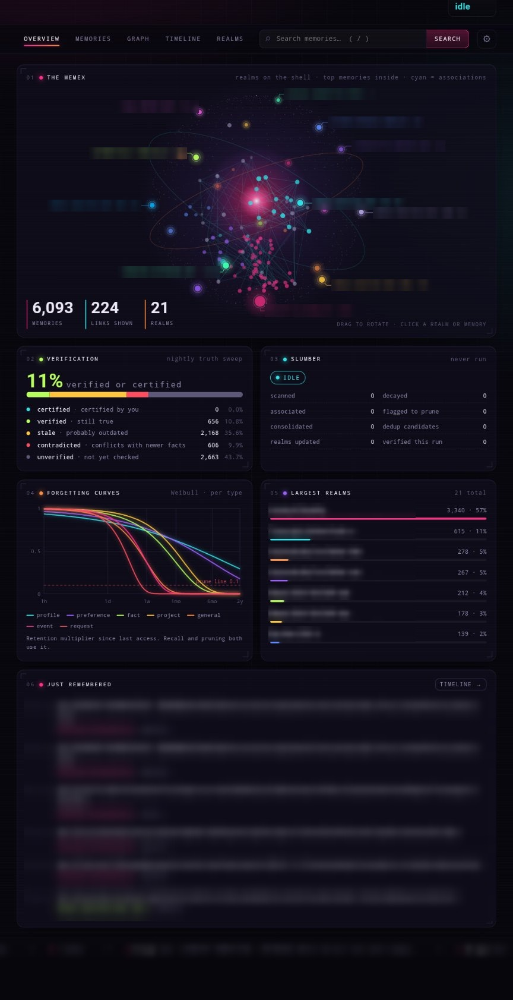
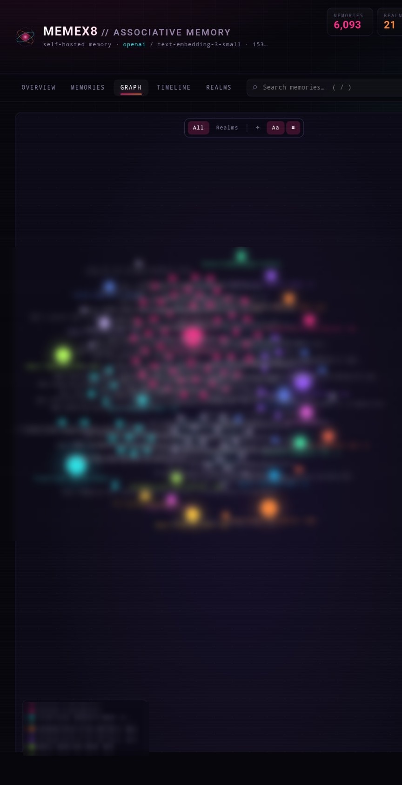
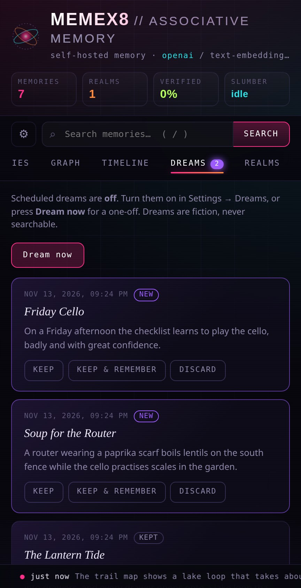
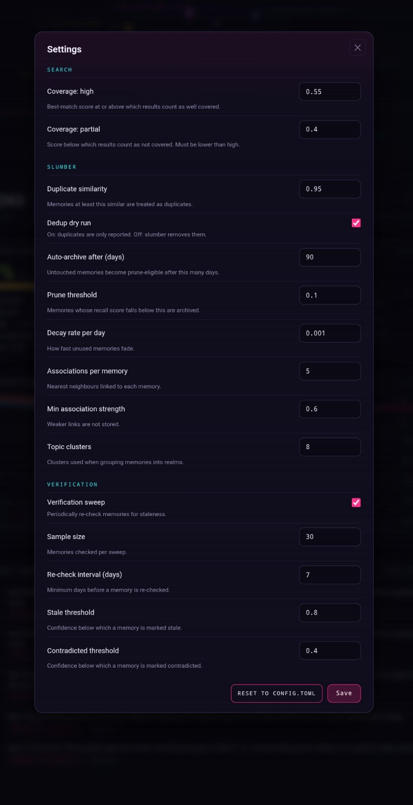

Forgets at the right speed
Per-type Weibull decay: a preference fades over months, an event over a week, a request in days. Nothing is ever fully deleted; it just ranks lower.
memex8 is a self-hosted memory for AI agents that works like a human one: memories fade at different rates depending on what they are, related ideas link themselves, and a nightly “sleep” keeps it tidy. Hybrid keyword + vector search, a web UI with sign-in, REST and MCP — one Docker command.
Most AI memory treats every fact as equally important forever. memex8 doesn’t: it forgets, connects, verifies and recovers, the way a useful memory should.
Per-type Weibull decay: a preference fades over months, an event over a week, a request in days. Nothing is ever fully deleted; it just ranks lower.
Vector similarity plus BM25 keyword matching, so exact names, IDs and rare words are found as well as meanings. Queries are classified by intent (temporal, factual, preference…) and re-weighted, with no LLM on the search path.
Each memory links to its nearest neighbours during the nightly sleep, and recalling one primes the others (spreading activation). Realms self-organise into topic clusters, with no manual tagging.
TurboVec (Google’s TurboQuant) stores vectors at 4 bits: 8× smaller, no training, data-oblivious. Qdrant keeps payloads and filters; a coverage check falls back to Qdrant if the index ever goes stale.
Deduplicate, compress, re-cluster, prune stale memories, link, detect knowledge gaps and verify, in 13 phases. LLM summarising is opt-in, and never touches profile, preference, setup or decision memories.
A nightly sweep rates whether memories are still true. Certify the ones you’ve confirmed to protect them. Consolidation keeps provenance with undo, removed duplicates are journaled, and backups are verified by a restore drill.
Opt-in. On a schedule you pick, memex8 weaves a few memories into a short dream and a “waking note” naming one real connection between them. Dreams are fiction, kept apart from your memories and never returned by search. Keep or discard each one.
Authenticated REST API (/api/v1), an MCP server over stdio and HTTP, a native Hermes Agent memory provider, and a bridge so Claude Code and Codex share one memory across your network.
No cloud dependency. Fail-closed API key, argon2id sign-in, and a one-line switch for who can reach it (this machine, your Tailscale IP, your LAN). Run embeddings locally with Ollama and nothing leaves your network.
A single self-contained page embedded in the binary: no CDN, no build step, behind your sign-in.




memex8 ships a small retrieval benchmark and only makes a change the default once it helps. Here is what changed most recently.
BM25 keyword matches are blended into vector search. Top-15 recall rose from 47.6 to 52.5 on the public MemDerive benchmark, with no test world getting worse. Toggle it in Settings.
An opt-in scheduled dream plus waking note, a Dreams tab with review, a memex8_dreams tool so your agent can show you a new dream and ask whether to keep it, and an optional “remember it” that stays out of normal search.
LLM consolidation is now a Settings switch and off by default. Even when on, durable types (profile, preference, relationship, setup, instruction, decision, commitment) are never merged into a summary.
bench/memderive replays 1,503 questions across 10 worlds against a throwaway instance and scores retrieval with no LLM judge. A re-check script audits old summaries against their sources, dry-run by default.
| Search | Support recall | Full witness |
|---|---|---|
| Vector only (before) | 47.6 | 31.9 |
| Hybrid, keyword weight 0.15 (now the default) | 52.5 | 34.0 |
Support recall is the share of the memories a question needs that appear in the top 15. Full witness means everything needed to answer came back. Data: DeriveMem (CC BY 4.0).
A dark HUD dashboard with the Memex sphere, timeline scrubber, association graph and forgetting curves.
Username and password with argon2id hashing, an HttpOnly session cookie and a lockout after repeated failures. The API key keeps working for agents.
Edit validated tunables in the browser, and choose who can reach memex8 with scripts/set-bind.sh.
ghcr.io/ex8-ca/memex8 (linux/amd64): skip the Rust build entirely.
Docker with Compose v2 is all you need. Pick how you want to run it.
Choose your embedding model before storing memories: vectors from different models or dimensions aren’t interchangeable. The prebuilt image is for linux/amd64; on arm64 (Apple silicon, Raspberry Pi) build from source. Sign-in, backups and network exposure are covered in the README.
One binary with the web UI embedded. Qdrant holds payloads, TurboVec holds the compressed vectors.
┌────────────────────┐ ┌──────────────────────────────────────────────┐ ┌────────────────────────┐ │ AI agents │ │ memex8 engine (one Rust binary) │ │ Storage │ │ │ │ │ │ │ │ Hermes Agent │ │ per-type Weibull decay │ │ Qdrant │ │ Claude Code │ │ hybrid search: vectors + BM25 │ │ payloads + filters │ │ Codex │ │ query-intent weighting │ │ TurboVec index │ │ any MCP client │ │ associations + verification │ │ 4-bit, 8x smaller │ │ │ │ slumber (nightly sleep) │ │ Embeddings │ │ │ │ dreams (opt-in) · web UI + login │ │ OpenAI or Ollama │ └────────────────────┘ └──────────────────────────────────────────────┘ └────────────────────────┘ REST /api/v1 · MCP (stdio + HTTP) · Hermes plugin · Claude Code / Codex bridge
Qdrant stores memories, realms and metadata. The search index is a 4-bit TurboVec file, rebuilt each sleep cycle and validated on load so a stale index can never hide your memories.
Trait-based embedders: text-embedding-3-small (1536d), any OpenAI-compatible endpoint (MiniMax, Together, Groq) via base_url, or nomic-embed-text locally (768d).
MIT licensed Rust with a unit and integration test suite that runs against a disposable Qdrant. Backups are cold, verified and restorable: see docs/BACKUPS.md.
One memory, many clients. Point them all at the same authenticated server.
Clone the repo, run docker compose up, and give your agent a memory that persists across sessions. OpenAI or Ollama — your call.